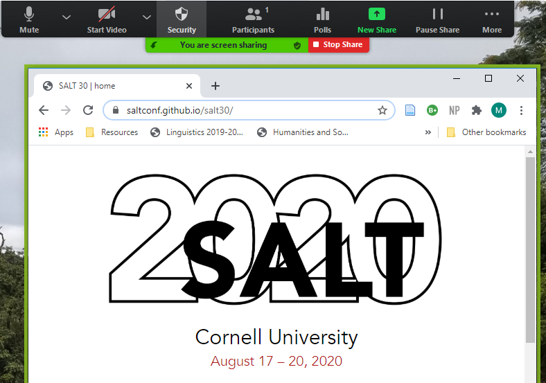

This page gives an overview of how to use Zoom including:
Zoom Tips
- Use the computer (desktop) version of Zoom for full features
- Turn off or pause back-ups and syncing (Dropbox, Google, etc)
- Limit the number of applications and tabs open
- Use headphones to avoid echo in your audio
- Keep yourself muted when you are not talking. Then unmute yourself using the microphone/(un)mute button or ⌘/Alt+A
Zoom Basics
Connecting to a Meeting
When you first click on the Zoom link, you will be directed to open the link in the Zoom application that should already be installed on your device. (If not, please install Zoom.)
Then, you will see the following window, which allows you to connect your device audio to Zoom.
You have the option of connecting your audio through your phone. This might be a good option if your internet is not stable.
In the Meeting
Some functions of Zoom vary by device and operating software, but the meeting screen should look similar to the following:
If you are not a meeting host, the bar at the bottom of the screen will look like this:
These buttons will turn your mic and video on or off:
The ^ buttons next to the mute and video buttons allow you to choose between different video/audio/stereo options your device might be able to access.
The participants button tells you how many people are in the meeting. Clicking it opens a window with the names of each participant. It also shows whether each participant is (un)muted or has their video on/off. Certain reaction icons will also appear here next to the person's name. This button is how you access the "Raise Hand" feature.
The chat button opens a window where you can send a message to everyone in the zoom meeting or to a specific individual. When a person joins a zoom session, they will start getting messages from that point on, but not messages sent earlier in the chat.
Screen-sharing
The share screen button allows you to share your screen with everyone in the zoom session.
Then you can choose the window with your open presentation and start sharing. At that time, you may no longer see the gallery of other participants' video screens and the zoom bar may move to a different position.
Sometimes it is difficult to tell what window is being shared. When you are sharing your screen, there will be a green bar labeled "You are screen sharing" that appears under the zoom bar. There will also be a green box around the screen that is being shared.
To the right of that green bar will be the option to "stop share". There is also a new button, "pause share", on the zoom tab. Clicking this will freeze the shared screen at its current location. Other participants will still see the screen, but they won't see a change if you scroll on your screen.
When you are sharing your screen, you can still see others' videos if you want. There will be a separate bar that shows a few participants' videos.
At the top of the bar, you can change how many videos are shown. Clicking the thin line at the far left gets rid of all videos, showing only who is talking. The single rectangle to the right of that will display one person's video, so you can choose your most encouraging audience member. The two stacked rectangles shows three or four participants with the arrow at the bottom that allows you to scroll through. Clicking the three-by-three grid will give a gallery view.
Shared screen view options
If you are viewing a shared screen you can change the size of the image by clicking "View Options" at the top of the shared screen. It should be to the right of a green block that says "You are viewing [name]'s screen.
Once you click "View Options", you will see several options for changing the size of the shared image.
Moving through Breakout Rooms
The poster sessions will be held through a single Zoom meeting with each poster in a separate, named Breakout Room. To do this all participants will temporarily be made a Co-host of the Zoom meeting to allow them to move independently through the breakout rooms.
NOTE: Being a co-host allows you to do things such as mute other participants. Please do not do this.
Other than the poster presenters and co-hosts, everyone will be assigned to the Common Room. When the breakout rooms first open, you will see a pop-up that invites you to join your assigned room.
Once you are in any breakout room, you will be able to move yourself
to another breakout room.
While in a breakout room, you can open the Breakout Room window
by clicking Breakout Rooms on the bar at the bottom of the screen.
You may have to click the "..." button before you see the Breakout
Rooms button.
Then you will see a window or pop-up that lists all the Breakout
rooms and the people in each room. You will be in the room that has
the option "Leave" on the right-hand side. You should also see your
name there. Clicking "Leave" will bring you back to the main Zoom
room, where the Host will be. You can go there or call the host to
your Breakout Room if there are any issues.
You can move to another Poster by clicking "Join" to the right of the
poster name.